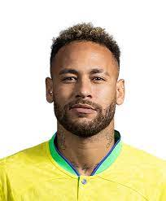
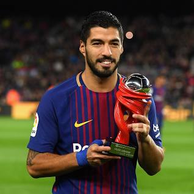

the best footballer in football arena
- Messi (10)
- Neymar (10)
- Ronaldo (7)
- Suarez (10)
Luis Lionel Andres Messi (“Lionel Messi”) is one of, if not, the most popular soccer player in the world. Born on June 24 1987, Messi was the youngest player ever to play for FC Barcelona. At the age of 16, Messi made his first appearance for FC Barcelona. Messi was born in Rosario, Argentina and moved to Spain at the age of 13 where he was offered the chance to train at FC Barcelona’s youth academy. At a young age, Messi was diagnosed with hormone deficiency which restricted his growth. Shorter than most of the kids at his age, Messi showed great talent and skills which put him in front of many organizations; one of which was Barcelona.

Neymar da Silva Santos commonly known as Neymar is regarded as one of the best footballers in the World. The Brazilian International made his professional debut at the age of 17 with Santos FC and scored his first goal for the club in his second appearance. He is considered as the heir of legendary Brazilian Pele, as three times World Cup winner spent the most part of his astonishing Football career at Santos Neymar is known for his exquisite and sublime trickery, pace, and World class finishing ability.

Cristiano Ronaldo is a football legend that has managed to conquer the world of soccer and fashion as well. He was born in Portugal. He grew up in his hometown called Madeira and when he was twelve he moved to Lisbon. He always had a passion over football since his childhood. Ronaldo started his football career as a youth player for Andorinha, he played for two years there then later he went to C.D. Nacional. In (1997) he moved to Sporting CP Lisbon football Club.

Luis Alberto Suárez Díaz (Spanish pronunciation: [ˈlwis ˈswaɾes]; born 24 January 1987) is a Uruguayan professional footballer who plays as a striker for Campeonato Brasileiro Série A club Grêmio and the Uruguay national team. Nicknamed El Pistolero ('The Gunman'), known for his finishing inside and outside the box and his vision, Suárez is regarded as one of the greatest strikers of all time.[2] Suárez has won two European Golden Shoes, an Eredivisie Golden Boot, a Premier League Golden Boot, and a Pichichi Trophy. He has scored over 500 career goals for club and country.